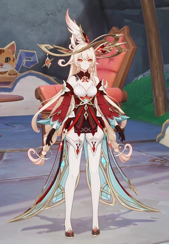

Mondstadt · Character Records
Alice
Alice is Klee’s mother, a famed traveler and author, and Hexenzirkel mage Codename A. She says she serves as a Seeker responsible for Teyvat’s borders under Istaroth’s support, though her remit remains only partly explained.

The great mage called Alice
Alice is a celebrated adventurer, mage, and author of the Teyvat Travel Guide. For much of the story she acted at a distance through letters, recordings, and magical devices; the Nod-Krai and Snezhnaya chapters bring her into direct conversations with the Traveler. Her extravagant jokes and nicknames are part of her manner, but they sit alongside serious duties and formidable knowledge.
The game has not given a precise age or a complete account of her origins. Her travels and long-standing relationships show that she has lived through events spanning centuries, but that history does not supply a reliable number or a full explanation of her nature.
Klee, Albedo, and chosen family
Alice is Klee’s mother and is fiercely proud of her daughter. She wants Klee to have a peaceful home and is willing to prepare for danger, even when she makes that concern sound like a joke. Klee’s life in Mondstadt is one of the reasons Alice gives for protecting Teyvat from the border crisis.
Alice also welcomed Albedo into Mondstadt after Rhinedottir sent him to seek her help. She treats him as family, connecting her relationship with Klee to her earlier bond with Rhinedottir and her creation. These ties are personal; they do not mean that Alice directs Albedo’s research or knows every detail of Rhinedottir’s plans.
The Hexenzirkel and codename A
Alice belongs to the Hexenzirkel and is identified by the codename A. The Mages’ Tea Party teaser and later meetings show witches who share knowledge and sometimes cooperate, but the circle’s members have distinct histories, opinions, and responsibilities. A Hexenzirkel plan should not automatically be attributed to every member.
Alice’s 7.2 explanation adds a new layer: she calls herself and her colleagues Seekers, says their work includes maintaining the world’s border and exploring life and knowledge in the universe, and names Istaroth as their supporter. She also says Istaroth forbade them from entering the conflict between Snezhnaya and the Heavenly Principles. The story has not yet set out the Seekers’ full membership or structure.
Stories, inventions, and Simulanka
Alice’s writing and magical inventions often turn travel into an experience for other people. She sent the Traveler and Paimon into Simulanka through a storybook, and she later contacted them about Andersdotter’s unfinished wish: to help the little Durin live among Teyvat’s people.
In ‘The Magic Known as Storytelling,’ Alice supplies a book and ink and works with the Hexenzirkel’s magic as Durin’s story is completed. The quest links her efforts with Rhinedottir’s alchemy and Barbeloth’s astrology. It presents a shared undertaking, not Alice acting alone or a general rule that any written story can change reality.
The border of Teyvat
In ‘A Nocturne of the Far North,’ Alice explains that she has a job maintaining Teyvat’s borders. She describes Abyssal energy as what lies beyond the border and says the phantoms appearing around Nod-Krai indicate that the boundary has been disturbed. She connects the unusual increase to a Trilunar Syzygy and to the three moons’ powers gathering in the region.
This is Alice’s account to the Traveler, offered while investigating an urgent crisis. It establishes that border maintenance is part of her stated work; it does not disclose a complete cosmology, how the border operates in every circumstance, or the full extent of her own power.
The Tsaritsa, Istaroth, and Asmoday’s terminal
The Tsaritsa invites Alice and Nicole to Snezhnaya after the Nails of Retribution trigger the Hallowing. Alice says that she cannot intervene in the conflict as herself because of Istaroth’s instruction, but she still wants to prevent the destruction of Teyvat. She leads the group to the Temple of Space and uses its Heavenly Principles query terminal under the absent Asmoday’s identity, explaining that this avoids implicating the other Seekers.
The terminal supplies information about the Hallowing, but Alice is not shown solving the crisis by herself. She helps the Traveler, Nicole, and the Tsaritsa’s allies obtain knowledge and understand the problem; cooperation across the nations remains essential. The dialogue confirms that Alice calls Istaroth her supporter and says Asmoday is missing, while leaving the wider relationships among the Shades and Seekers open.
Freedom and the Mondstadt trial
In the follow-up act, Alice joins the Hexenzirkel discussion in Mondstadt as the nation faces its trial at the Skyfrost Nail. She jokes that Dvalin could carry someone straight to the Nail, then says that willpower can be stronger than magic. Varka and the people of Mondstadt must decide what freedom means and act on their own answer.
Her presence matters, but the story leaves the choice to Mondstadt rather than having Alice solve the trial with a spell. She offers help if Varka’s attempt goes wrong; the successful answer comes from the people’s understanding of their own freedom.
What remains unknown
The story has not explained Alice’s exact age, complete origins, limits, or full history with the Hexenzirkel. It has introduced the Seekers and named Istaroth as their supporter, but it has not described their entire organization or established every rule governing their duties.
Alice is influential and unusually well informed, yet her statements still have a point of view and a context. Distinguish what she says directly, what a magical device reports, and what the game has not confirmed; the linked quests provide the evidence for those separate layers.
This is an original CoreGG reading guide, not an official HoYoverse article or a reproduction of the game text. Source links below identify the records used so you can check the original context.
Sources & references
Check these sources for the original game text and reference trail.